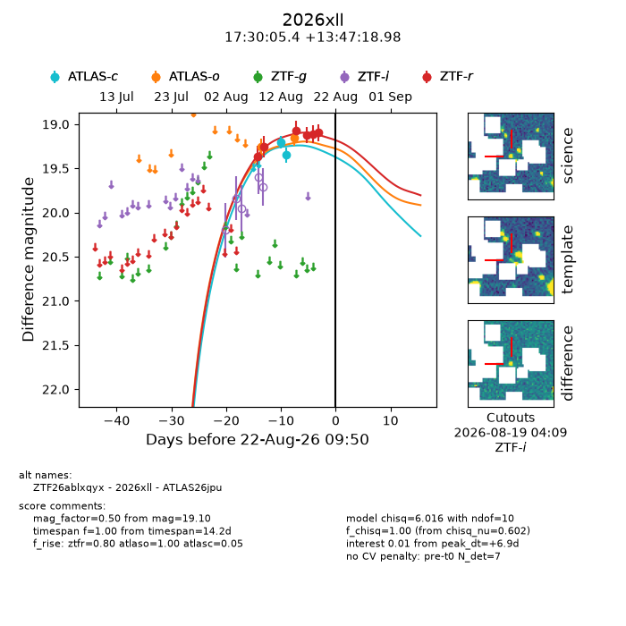
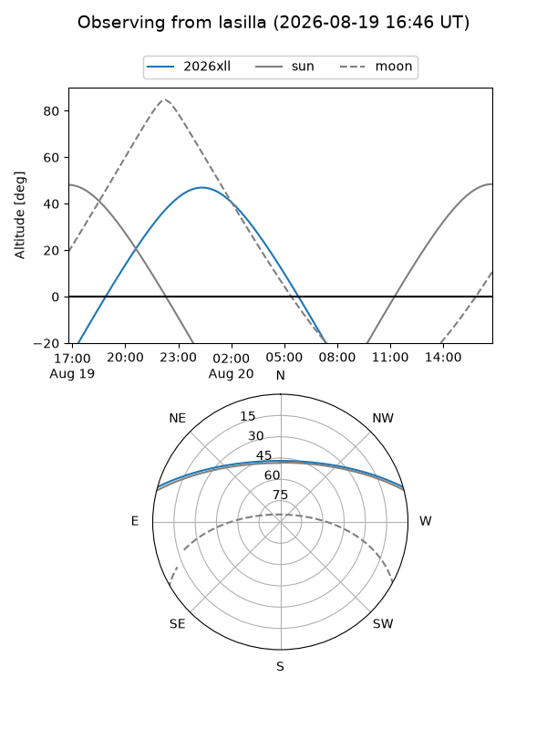
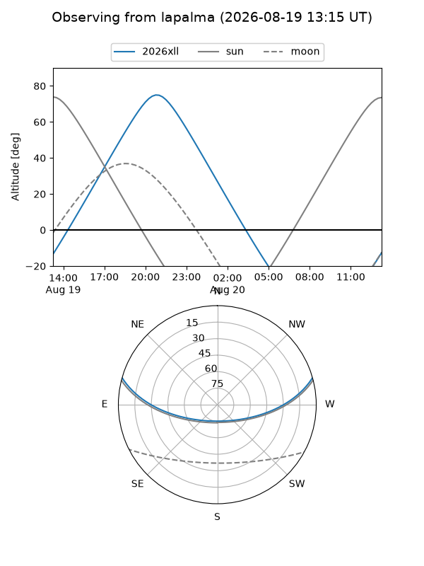
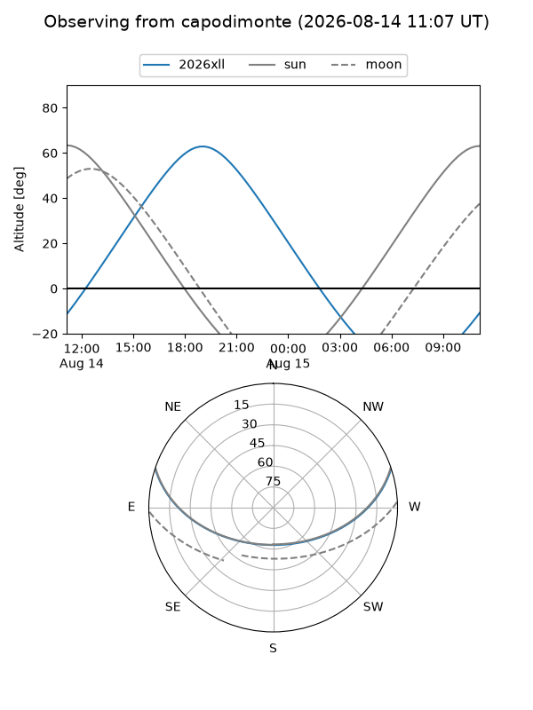
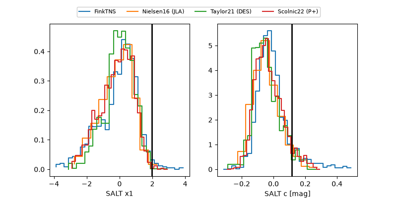

2026xll
Target 2026xll at 2026-08-22 09:54
Aliases and brokers:
FINK-ZTF: ztf.fink-portal.org/ZTF26ablxqyx
Lasair-ZTF: lasair-ztf.lsst.ac.uk/objects/ZTF26ablxqyx
ALeRCE-ZTF: alerce.online/object/ZTF26ablxqyx
YSE-PZ: ziggy.ucolick.org/yse/transient_detail/2026xll
TNS name: wis-tns.org/object/2026xll
Direct TNS query: direct search
alt names
ZTF26ablxqyx (ztf,fink_ztf)
2026xll (tns,yse)
ATLAS26jpu (atlas)
Coordinates:
equatorial (ra, dec) = 262.5225,+13.78861
equatorial (HMS+DMS) = 17:30:05.40,+13:47:18.98
galactic (l, b) = (36.5897,+24.14659)
Flags:
TNS type: nan
peak dt: +6.9
Photometry:
last atlasc=19.35, atlaso=19.16, ztfr=19.10
2 atlasc, 2 atlaso, 6 ztfr detections
Lightcurve

Visibility



Additional plots
